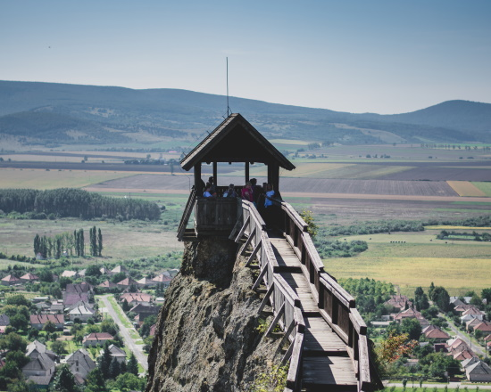
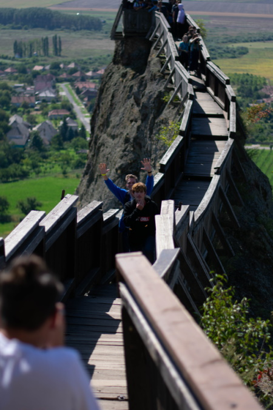

A boldogkői vár a Hernád folyó völgyének keleti oldalán, Boldogkőváralja közvetlen közelében emelkedő sziklaszirten álló középkori vár. A vár legkorábbi része (egy védművel körülvett öregtorony) valószínűleg a tatárjárás után keletkezett.
A 15. században István és György szerb fejedelmek tulajdona, majd a Szapolyai-családé lett. A török időkben a császár és a király közti intenzív csatározások egyik színhelyeként gyakran cserélt gazdát. 1666-ban a hódító Rákóczi György szerezte meg, később a kuruc időkben is több ízben fontos szerephez jutott, de még a Rákóczi-szabadságharc előtt, 1701-ben lakhatatlanná tették a császáriak.
A romot a 18. században a jezsuiták vették birtokba, akik gabonaraktárnak alkalmazták. Később a Péchy, majd a Zichy családé lett. A császári katonák robbantása és az azt követő pusztító századok ellenére egyik legjobb állapotban fennmaradt középkori váraink egyike.
